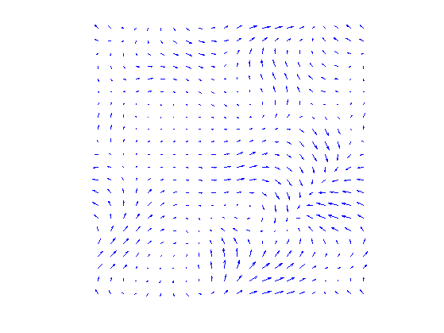
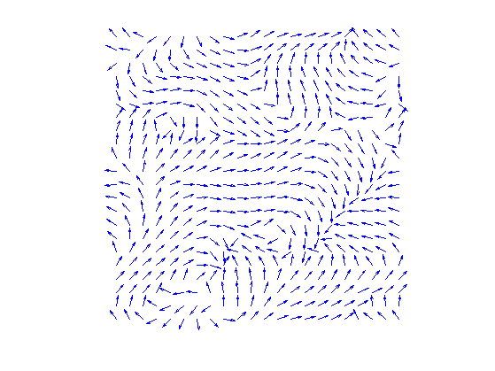
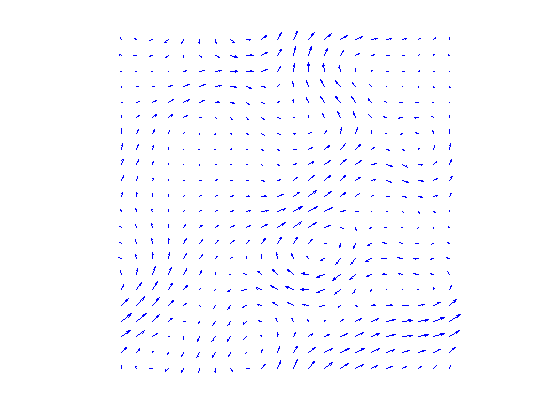
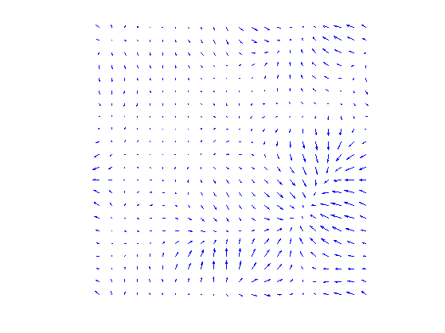
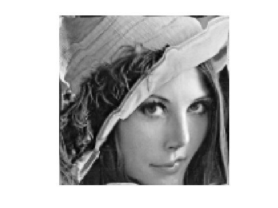
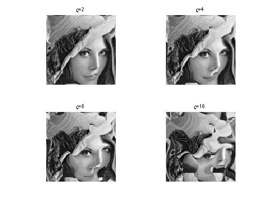
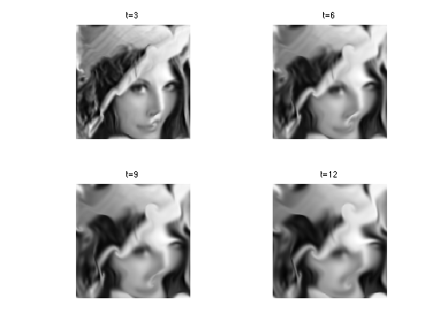
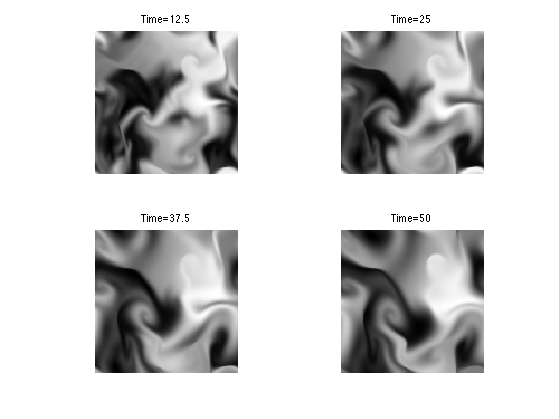

Fluid Dynamics
This numerical tour explores fluid dynamics for image generation.
Contents
Installing toolboxes and setting up the path.
You need to download the following files: signal toolbox and general toolbox.
You need to unzip these toolboxes in your working directory, so that you have toolbox_signal and toolbox_general in your directory.
For Scilab user: you must replace the Matlab comment '%' by its Scilab counterpart '//'.
Recommandation: You should create a text file named for instance numericaltour.sce (in Scilab) or numericaltour.m (in Matlab) to write all the Scilab/Matlab command you want to execute. Then, simply run exec('numericaltour.sce'); (in Scilab) or numericaltour; (in Matlab) to run the commands.
Execute this line only if you are using Matlab.
getd = @(p)path(p,path); % scilab users must *not* execute this
Then you can add the toolboxes to the path.
getd('toolbox_signal/'); getd('toolbox_general/');
Velocity Flow Field
A velocity flow is simply a 2-D vector field \(V = (V_i)_{i=1}^N \in \RR^{n \times n \times 2}\) where \(V_i \in \RR^2\) is one of the \(N=n \times n\) vectors at a position indexed by \(i\).
It can be generated as a realization of Gaussian process. The blurring creates correlations in the flow.
n = 128;
options.bound = 'per';
V = perform_blurring(randn(n,n,2), 40, options);
Subsampling display operator.
myplot = @(V)plot_vf( V(1:6:n,1:6:n, :) );
We can display the vector field using arrow.
clf; myplot(V);
We can renormalize the flow, which enhance the singularities. It defines \(\tilde V\) as \(\tilde V_i = V_i/\norm{V_i}\).
normalize = @(V)V ./ repmat( max(1e-9,sqrt(sum3(V.^2, 3))) , [1 1 2]);
Display.
clf; myplot(normalize(V));
Incompressible Flows
An incompressible flow as vanishing divergence. The set of vector incompressible flow defines a sub-space of \(\RR^{n \times n \times 2}\) \[ \Ii = \enscond{V}{ \text{div}(V)=0 } \qwhereq \text{div}(V) = \pd{V}{x_1} + \pd{V}{x_2} \in \RR^{n \times n}. \] Here \(\pd{}{x_s}\) for \(s=1,2\) are finite differences approximation of the horizontal and vertical derivative operators (we suppose here periodic boundary conditions).
The orthogonal projection \(U = \text{Proj}_{\Ii}(V)\) on \(\Ii\) is computed by solving a Poisson equation \[ U = V-\nabla A \qwhereq \Delta A = \text{div}(V). \]
This is especially simple for periodic boundary conditions since \(A\) can be compute over the Fourier domain as \[ \forall \om \neq 0, \quad \hat A(\om) = \frac{\hat Y(\om)}{\mu(\om)} \qwhereq Y = \text{div}(V) \qandq \mu(\om_1,\om_2) = -4 \sin(\om_1 \pi / n)^2 -4 \sin(\om_2 \pi / n)^2 \] and \(\hat A(0)=0\).
Compute the kernel \(\mu(\om)\).
[Y,X] = meshgrid(0:n-1,0:n-1); mu = sin(X*pi()/n).^2; mu = -4*( mu+mu' ); mu(1) = 1;
Computation of \(A\).
A = @(V)real( ifft2( fft2( div(V, options) ) ./ mu ) );
Projection on incompressible flows.
ProjI = @(V)V - grad(A(V), options);
Display \(U=\text{Proj}_{\Ii}(V)\).
U = ProjI(V); clf; myplot(U);
Display \(W=U-V\) the irrotational component of \(V\).
clf; myplot(V-U);
Note that the decomposition \(V=U+W\) is called the Hoge decomposition of the vector field.
Image Advection Along the Flow
A flow defines a warping operator that transport the content of an image along the streaming of the flow.
We load an image \(f\).
name = 'lena';
f = crop( load_image(name, 2*n), n);
Given some vector field \(U\), the warping operator \(f_1 = \Ww_U(f)\) along the flow is define \[ f_1(x) = f(x+U(x)) \] i.e. it advects the values of \(f\) by the vector field \(U\) to obtain the values of \(f_1\).
We define \(U\) as a scaled normalized incompressible flow.
U = normalize(ProjI(V));
Helper function: enforce periodicity.
periodic = @(P)cat(3, mod(P(:,:,1)-1,n)+1, mod(P(:,:,2)-1,n)+1 );
Helper function: extend an image by 1 pixel to avoid boundary problems.
extend1 = @(f)[f f(:,1)]; extend = @(f)extend1(extend1(f)')';
Helper function: bilinear interpolation on a grid.
myinterp = @(P1,f1,Pi)interp2( P1(:,:,2), P1(:,:,1),f1, Pi(:,:,2), Pi(:,:,1) );
First we compute the initial and warped grids.
[Y,X] = meshgrid(1:n,1:n); P = cat(3, X,Y); [Y1,X1] = meshgrid(1:n+1,1:n+1); P1 = cat(3, X1,Y1);
Defines the warping operator \(\Ww_U\).
W = @(f,U)myinterp( P1, extend(f), periodic( P - U ) );
Display a warped image \(\Ww_{\rho U}(f)\) for some scaling \(\rho\).
rho = 2; clf; imageplot(W(f,rho*U));
Exercice 1: (check the solution) Display \(\Ww_{\rho U}(f)\) for various values of \(\rho\).
exo1;
Exercice 2: (check the solution) Define an iterative scheme via: \[ f^{(\ell+1)} = \Ww_{\rho U}(f^{(\ell)}). \] Display the result \(f^{(\ell)}\), which corresponds approximately to solving an advection equation at time \(t=\ell \rho\).
exo2;
Fluid Dynamics
Fluid dynamics solves the incompressible Navier-Stokes equations to evolve in time the vector field.
We discribe here a simple algorithm introduced in:
J. Stam, Stable Fluids, SIGGRAPH'99, 1999, p. 121-128.
It proposes a semi-implicit scheme for the resolution of the Navier Stockes equations for the movement of incompressible fluids \[ \pd{V}{t} = \text{Proj}_{\Ii}\pa{ -(V \cdot \nabla) V + \nu \Delta V + W }. \] Here \(\nu \geq 0\) is the viscosity of the fluid, \(W\) is a source term, \(\Delta\) is the Laplacian, and \(-(V \cdot \nabla) V\) is the non-linear self-advection, where we have used the short-hand notation \(V \cdot \nabla\) for the derivative operator along a flow \(V\): \[ (V \cdot \nabla)U = ( V_1 \pd{U_1}{x_1} + V_2 \pd{U_1}{x_2}, V_1 \pd{U_2}{x_1} + V_2 \pd{U_2}{x_2} ).\]
In order to visualize the flow, we also advect and diffuse along the flow a density \(g\) of particules, which is a scalar field. Once \(V\) has been computed, it follows a linear PDE \[ \pd{g}{t} = -(V \cdot \nabla) g + \mu \Delta g + h \] with some initial condition at time \(t=0\), where \(h\) is a source for the density.
In practice, we solve this PDE in parallel to the PDE for \(V\).
In the following, we use \(W=0\) and \(h=0\) (no sources).
Set the viscosity \(\nu\) for the velocity field.
nu = 1/10;
We use a larger viscosity \(\mu\) for the evolution of the density of particules.
mu = 2*nu;
Extend the warping operator \(\Ww_U\) to work with vector fields as input. This will apply \(\Ww_U\) on each channel of the vector field (X and Y coordinates).
Wt = @(V,U)cat(3, W(V(:,:,1),U), W(V(:,:,2),U) );
We discretize the PDE's using some time step \(\tau\).
tau = .5;
The algorithm computes \(V^{(\ell)}\) at iteration \(\ell\) which is an approximation of the PDE solution at time \(\ell \tau\). It is computed itertatively as \[ \tilde V^{(\ell)} = \Ww_{\tau V^{(\ell)}}( V^{(\ell)} ) \qandq V^{(\ell+1)} = \text{Proj}_{\Ii}\pa{ \tilde V^{(\ell)} + \tau\nu\Delta \tilde V^{(\ell)} + \tau W } \]
It computes in parallel the evolution of the density as \[ \tilde g^{(\ell)} = \Ww_{\tau V^{(\ell)}}( g^{(\ell)} ) \qandq g^{(\ell+1)} = \tilde g^{(\ell)} + \tau\nu\Delta \tilde g^{(\ell)} + \tau h \]
Set the initial field \(V=V^{(0)}\) at time \(t=0\).
V = normalize(ProjI(V));
Set the initial density \(g=g^{(0)}\) at time \(t=0\).
g = f;
The first step is to advect the vector field \(V\) and \(g\) along the flow \(V\) itself. This corresponds to an implict discretization of the term \(-(V \cdot \nabla) V\).
g = W (g,tau*U); V = Wt(V,tau*U);
We implement the Laplacian using finite difference.
s1 = [2:n 1]; s2 = [n 1:n-1]; Delta = @(g)1/4 *( g(s1,:,:) + g(s2,:,:) + g(:,s1,:) + g(:,s2,:) ) - g;
The second step is to diffuse the vector field and the density.
V = V + tau*nu*Delta(V); g = g + tau*mu*Delta(g);
The last step is to ensure incompressibility of \(V\) by projecting on \(\Ii\).
V = ProjI(V);
Exercice 3: (check the solution) Compute the fluid dynamic by iterating these steps.
exo3;